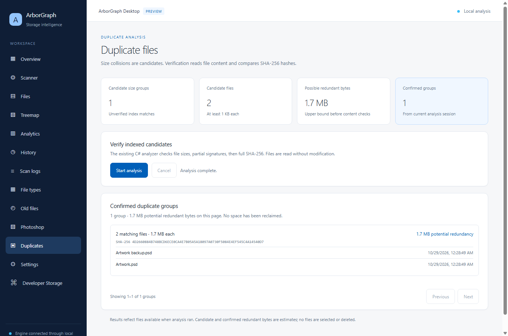
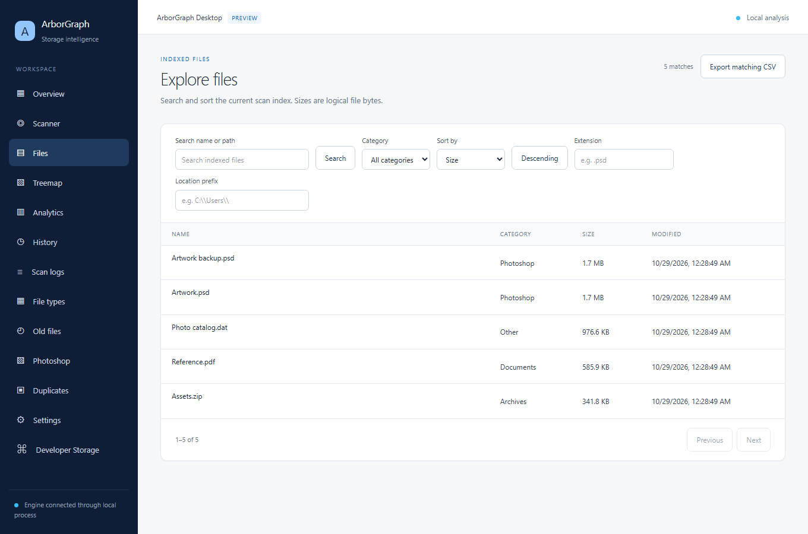

Trace space through directories.
Scan a selected drive or folder, then move through its indexed file and directory hierarchy.
Inspect your filesystem, see how directories use space, and find files worth a closer look. ArborGraph keeps the analysis on your Windows computer.
v1.3.2 · Windows 10 / 11, x64 · 133.7 MiB installer
In the desktop app, rectangle area follows indexed logical bytes. Open a directory to inspect its children, then move back through the path.
Actual desktop app · generated sample files
Sample files scanned by ArborGraph; local paths are hidden. Select an image to view it full size.
The Electron interface stays responsive while a separate .NET engine indexes local folders and drives. Results live in a local SQLite catalog.
Scan a selected drive or folder, then move through its indexed file and directory hierarchy.
Use proportional treemap tiles, file categories, and largest-folder views to find where logical bytes accumulate.
Review duplicate candidates, file age, and developer storage. Preview insights are read-only and scanned files remain untouched.
Restore scan history, compare runs, and export audit reports in HTML or JSON and indexed file lists in CSV.


ArborGraph scans through a local engine process and keeps its index on your device. The desktop application has no telemetry or cloud sync.
Explore the illustrative scanner walkthroughThe browser walkthrough is a simulation; it does not inspect your disk.
The v1.3.2 desktop preview is available for Windows. Installation and upgrade testing is incomplete; review the known issues before use. A portable binary is not part of this release.
ArborGraph Desktop Preview · v1.3.2 · x64
ArborGraph-Desktop-Preview-Setup-v1.3.2-x64.exe
Compute the downloaded installer’s SHA-256 in PowerShell. Compare the full result with the digest published for v1.3.2.
Get-FileHash .\ArborGraph-Desktop-Preview-Setup-v1.3.2-x64.exe -Algorithm SHA256Comparison happens in this browser. No file or checksum is uploaded.
Practical guidance for installation, scanning, and keeping a local index.
Browse the detailed legacy referenceDownload the x64 setup file, verify its SHA-256, and run the Windows setup wizard. The installer offers Start Menu and desktop shortcuts. Read the EULA during setup.
Windows 10 or 11 on an x64-compatible device. The preview bundles its desktop and .NET engine components. A reliable minimum RAM or free-space number has not been published for this build.
Open ArborGraph Desktop Preview, select a drive or choose a folder, then start a scan. Review indexed logical bytes, skipped items, files, categories, and the treemap after completion.
The desktop analysis is local and offline. Restricted or locked items are reported as skipped. Insights in this preview are read-only.
If Windows SmartScreen appears, compare the installer hash against the release first. If a scan cannot read a path, check Windows permissions and the app’s scan log.
Remove ArborGraph Desktop Preview through Windows Installed apps. The local scan catalog can remain in your user profile; remove it separately only if you no longer need that history.
Published 29 October 2026 UTC
This preview separates the shared storage engine from the WPF interface to reduce the installer size. Installation and upgrade testing remains incomplete; see the release notes for known limitations.
Read full release notes Earlier releasesArborGraph is published by AG Diaz Evangelista. Use of the desktop software is governed by the End User License Agreement. Third-party components carry their own notices.